-
IO: HDF Open: load training.h5
and show all maps (grids) with
 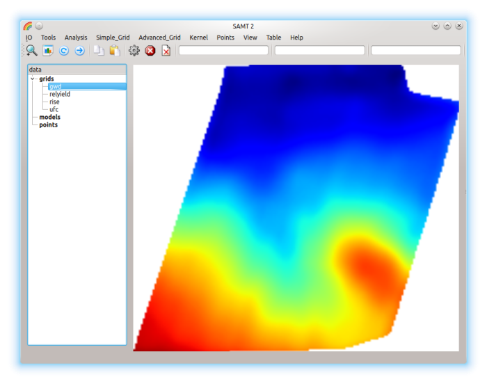
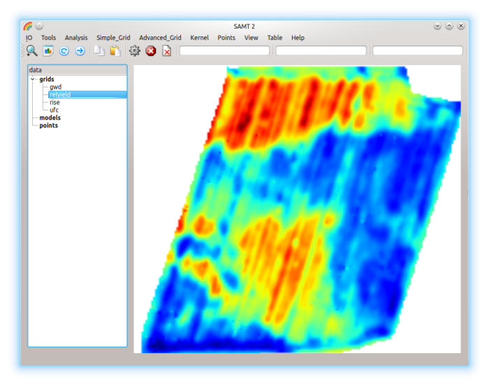
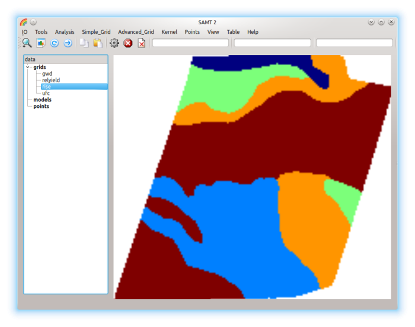
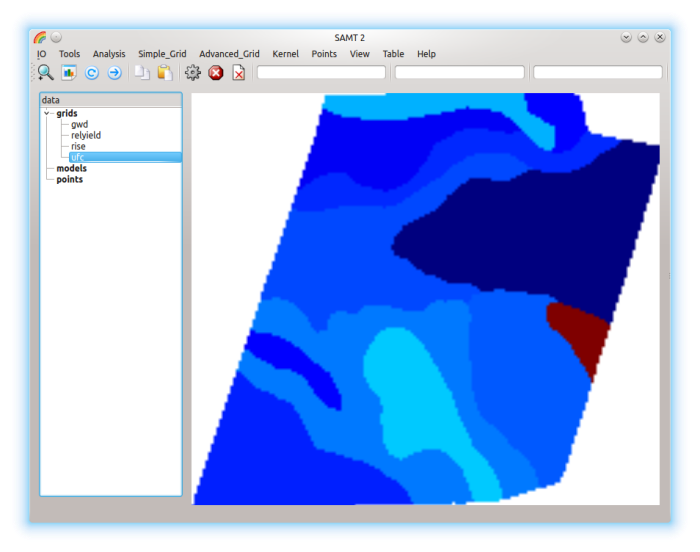
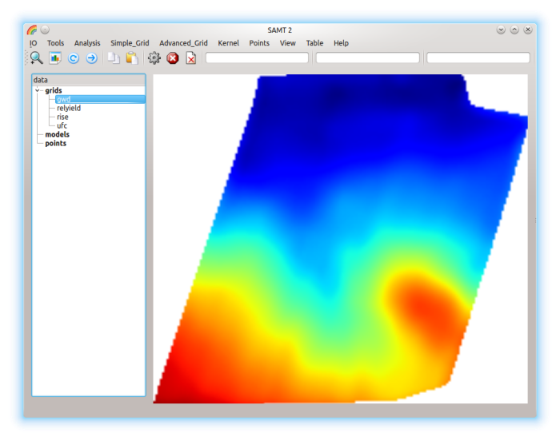
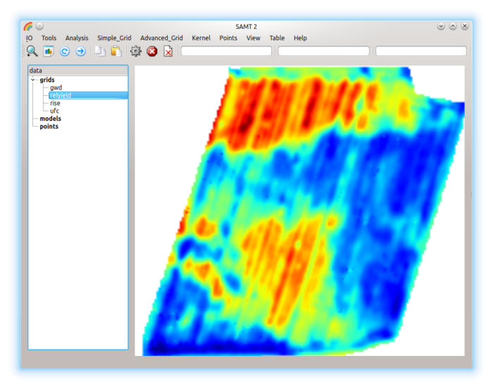
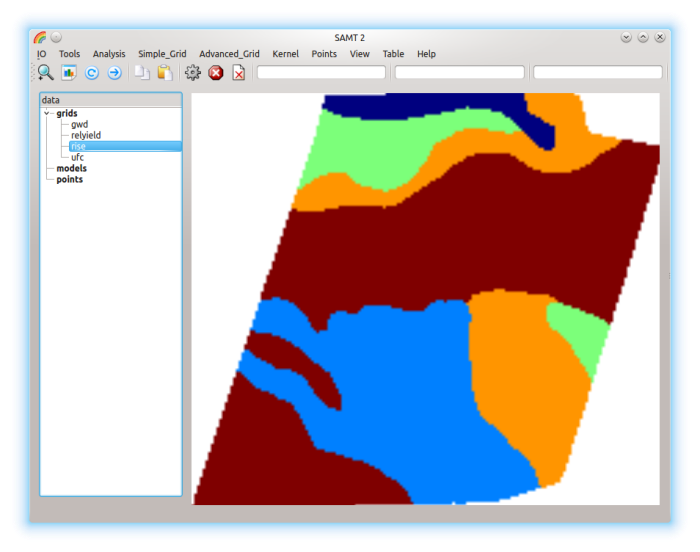
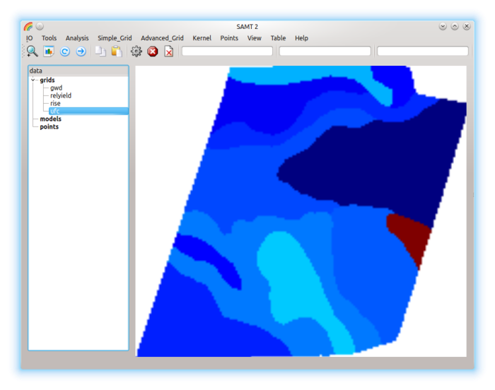
- IO: SVM_Open: load the model gwd_rise_ufc.svm
-
If you highlight the model gwd_rise_ufc, then the statusbar
will have the involved gridnames.
Set these grids with doubleclick into P1=gwd, P2=rise, P3=ufc.
The model has to be highlighted necessarily!
Apply the model with  ,
the result will be the new grid gwd_rise_utc
,
the result will be the new grid gwd_rise_utc
View: Colorbar shows it in a separate window with colorbar
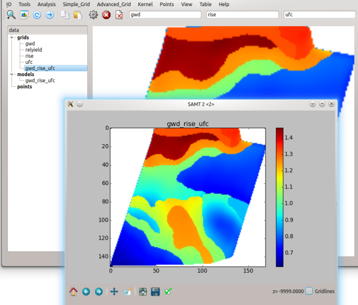
- Set P1=0.5, P2=1.7
View: Colorbar
shows the same grid within new limits P1=min, P2=max
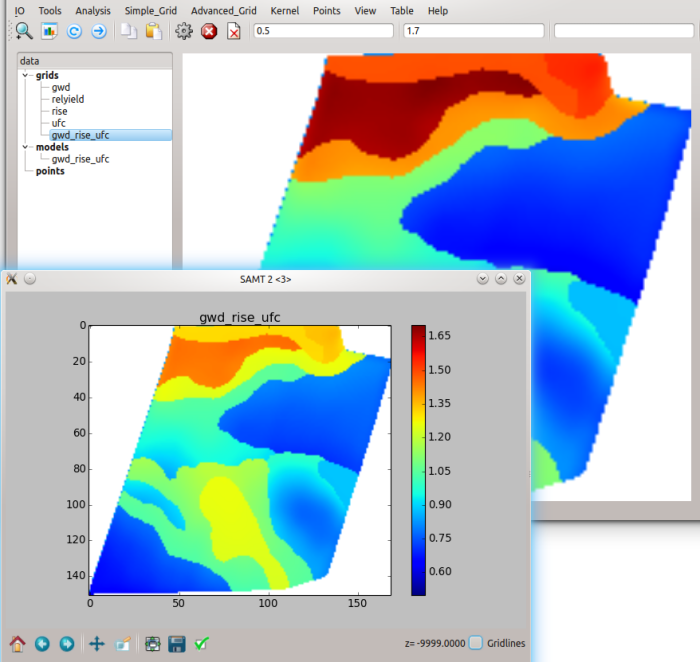
-
Clear P1, P2, P3 with
 ,
then copy the grid gwd_rise_utc with
,
then copy the grid gwd_rise_utc with

- Clear P1 and highlighte grid gwd_rise_utc
Simple_Grid: Class (default number of classes: P1=10)
-
Set P1=relyield (output of training.h5)
and highlighted=gwd_rise_utc
Analysis: Corr result is P2=Correlation coeffizient.
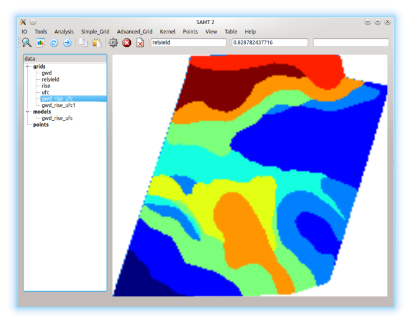
-
Set classes: P1=12, highlighted=gwd_rise_utc1
Simple_Grid: Class
-
Set P1=relyield, highlighted=gwd_rise_utc
Analysis: Corr P2 will get the Result.
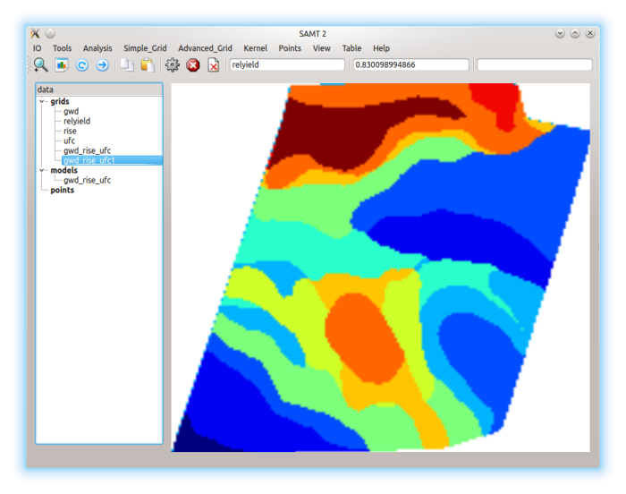
Back to top